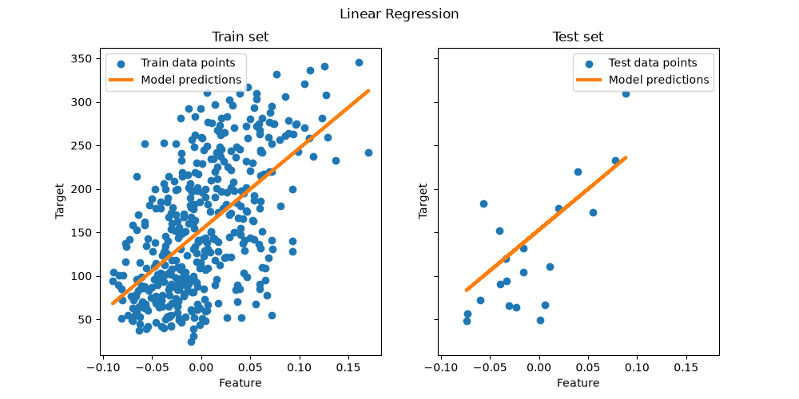
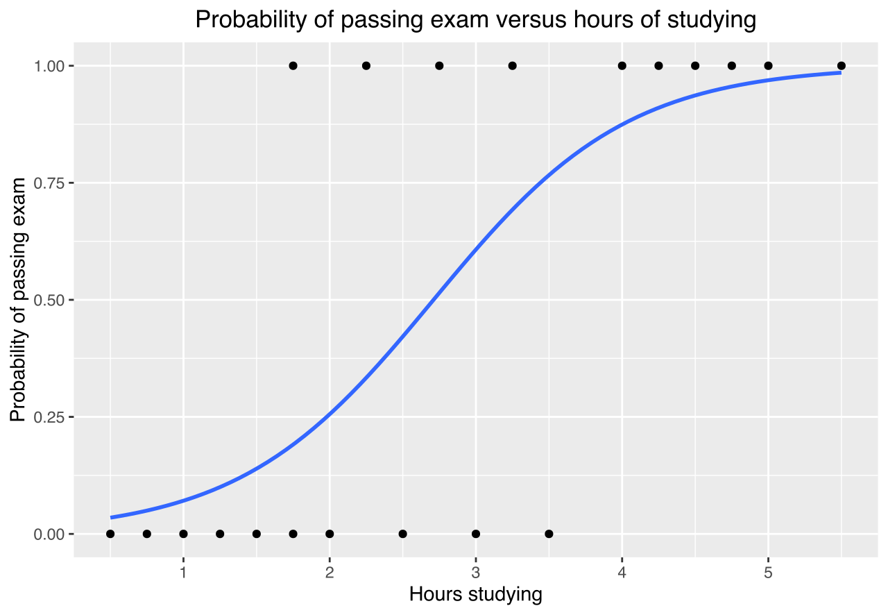
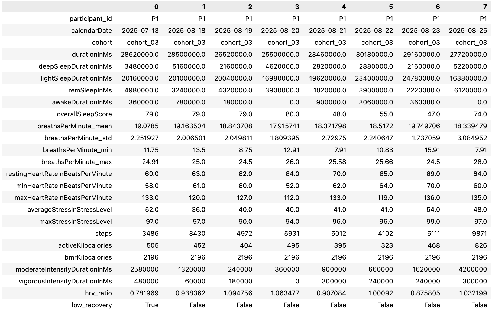
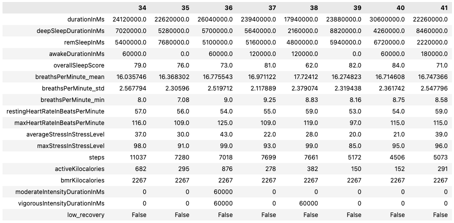
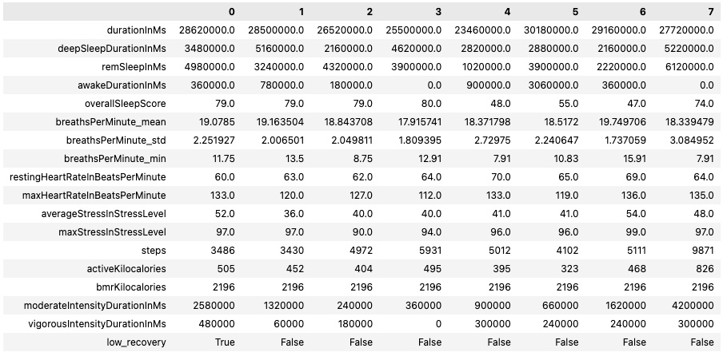
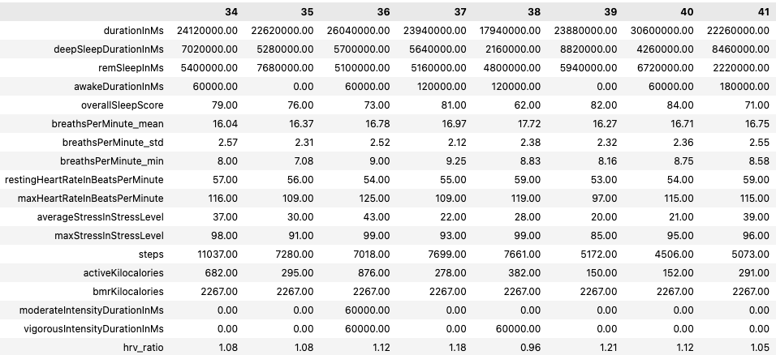
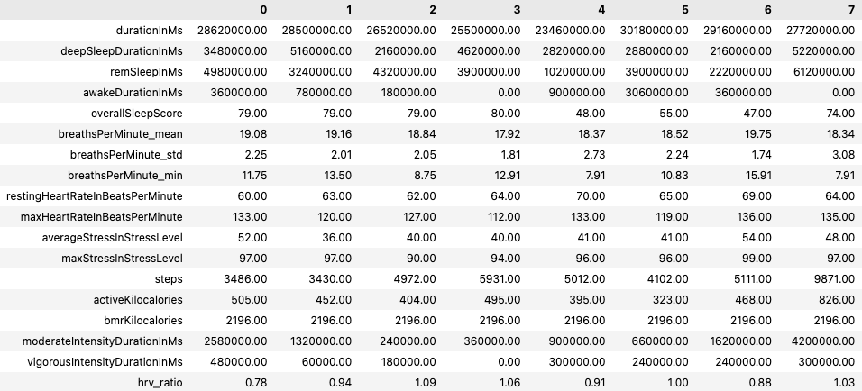
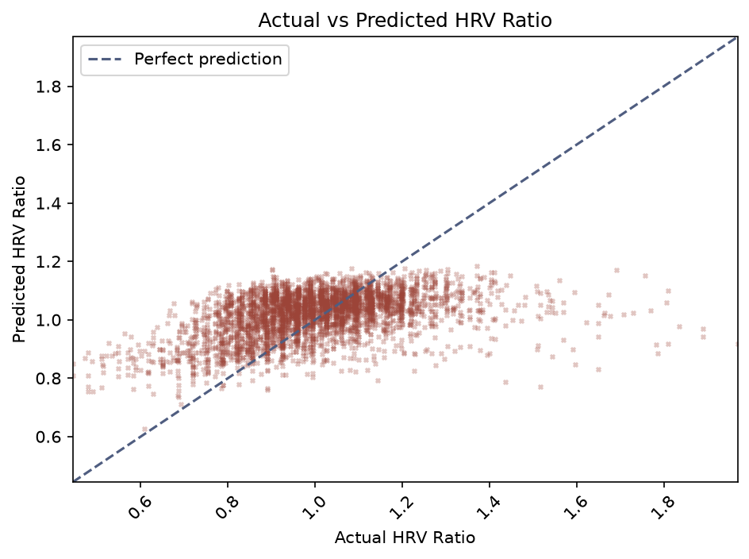
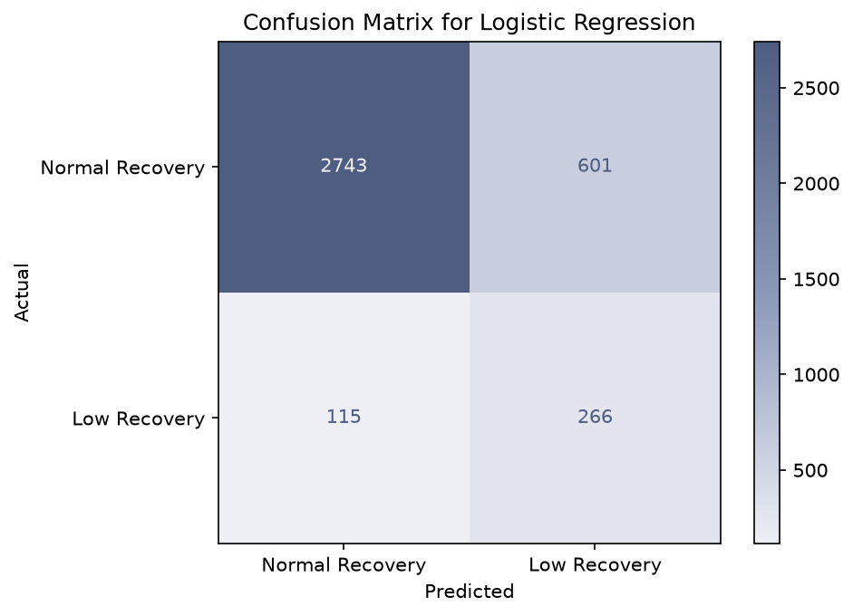

Linear regression predicts a specific number. Here, it combines all of the features into a formula that predicts hrv_ratio, a night's HRV compared with that person's own average. Logistic regression instead predicts a probability between 0 and 1 that a night belongs to a certain class, for example a 0.76 chance of low recovery based on the same features. The weighted sum, called the logit, is turned into odds by raising e to the power of the logit. The odds are then converted to a probability by dividing them by one plus the odds. Together, these steps are the sigmoid function, which squeezes any score into a value between 0 and 1. A threshold, usually 0.5, turns the probability into a class: nights above 0.5 are labeled low recovery, and nights below it are labeled normal.


Both regression models use the same dataset as the Naive Bayes models: 18,728 nights from 98 participants. The nights were grouped by participant, and each participant's average overnight HRV was recorded. Each night's HRV was then divided by that participant's average to get a ratio, the HRV ratio. Any night at 80% of the participant's average or lower (at least 20% below their normal) was labeled "low recovery." In total, 1,920 of the 18,728 nights (10.3%) were labeled low recovery. The logistic regression model predicts the class of each night (low recovery or normal recovery) along with an associated probability. Linear regression predicts an individual's HRV ratio, which is how that night's HRV compares with the person's own average.
As with the Naive Bayes models, the data was split by participant so that nobody appeared in both sets. Since each person has a unique "signature" in their individual metrics, it was important to keep each participant's nights together. If a person's nights were in both sets, the model could get insight into the test's answer key. Using StratifiedGroupKFold, the participants were separated into groups close to an 80/20 split, while keeping the share of low-recovery nights about the same in both sets. A random state of 42 was used so that the split was reproducible and stayed the same every time it was run. The training set contains 15,003 nights from 79 people, and the testing set contains 3,725 nights from 19 people, with about 10% of nights labeled low recovery in each. Since linear regression aims to predict a single number rather than a class, the split was balanced using the "low_recovery" label, so the linear model was trained and evaluated on the same participant groups as the logistic model.
The identifier columns (participant_id, cohort and calendarDate) were removed because they describe the person or the date rather than the night, and participant_id would tip off the model by letting it recognize patterns within individuals themselves. Prior to saving, the columns used to build the HRV ratio were removed. The linear model's inputs are also exclusive of hrv_ratio and low_recovery, since those features helped make up the answer key. Three features (lightSleepDurationInMs, breathsPerMinute_max and minHeartRateInBeatsPerMinute) were removed because each was highly correlated with another feature, as shown in the correlation heatmap on the Naive Bayes page. Features that are highly correlated with other features often make regression coefficients unstable. The same three that were removed for Naive Bayes were removed here for consistency and a fair comparison.





The code for this section was written in Python using pandas, NumPy, matplotlib, and scikit-learn (sklearn). Pandas and NumPy were used primarily for dataframe management, matplotlib was used for plotting figures, and sklearn was used for the train/test split, pipeline creation, scaling, linear and logistic regression modeling, and metric reporting. Scaling was done inside a pipeline so that the scaler was fit on the training set only.
The linear model did not perform well. Its predictions were typically off by about 0.12 per night (MAE), which is more than half of the 0.20 gap between a normal night (1.00) and the low-recovery cutoff (0.80). The R² value of 0.167 means that the features explain only about 17% of the variation in HRV ratio from night to night, which is low.
A coefficient of 0.087 for overallSleepScore means that for every one standard deviation increase in overallSleepScore, a person's predicted HRV ratio rises by about 0.087, or roughly 9 percentage points of their own average HRV, holding all other features constant. A coefficient of 0.018 for activeKilocalories means that for every one standard deviation increase in activeKilocalories, a person's predicted HRV ratio rises by about 0.018, or roughly 2 percentage points of their own average HRV, holding all other features constant.

Although the logistic model's accuracy (80.8%) is lower than the baseline of 89.8%, its recall is almost 70%, meaning it caught 266 of the 381 low-recovery nights. Predicting the baseline (normal recovery for every night) would give a recall of 0%. The weakness is precision: only 30.7% of the nights the model flagged were actually low recovery, so about 70% of flagged observations were false alarms. Holding all other features constant, the odds of a low-recovery night decrease by about 76% for every one standard deviation increase in overallSleepScore (coefficient −1.41, odds ratio 0.244).
Compared with Naive Bayes, logistic regression performed better in balanced accuracy (0.759 vs. 0.66) and recall. The difference in recall is especially large. Logistic regression caught 70% of low-recovery nights compared with 41% for Naive Bayes. This comes out to about 1.7 times as many low-recovery nights caught. The tradeoff, on the other hand, is that logistic regression also raised more false alarms, so its precision (31% vs. 36%) and accuracy (80.8% vs. 86.5%) were lower. Both of these models used the exact same data splits and the exact same features, so a side-by-side comparison of the two is a fair assessment.

Nights that saw higher sleep scores, and to some degree days with more physical activity, were associated with better recovery. The logistic model performed decently well at flagging the low-recovery nights, catching about 7 in 10. The linear model, though, struggled to predict an exact HRV ratio. However, some of the most important features are not truly predictive. Physical activity happens before bedtime, so it could be used to anticipate a night's recovery. A person cannot see their sleep score until the next morning, so at that point it is only associated with recovery rather than predicting it.
Some of the sleep-score link is to be expected. Garmin calculates its sleep score partly from overnight stress measurements, and those stress measurements use HRV in their calculations as well. So the sleep score and the HRV ratio recovery label are partly connected. However, the patterns themselves are still useful, even when they are discovered the next day or over time. Better recovery tended to come with better sleep, which can guide a person toward habits worth trying, such as earlier bedtimes or less caffeine before bed. Any future models built only on daytime information, like activity or step count, could show whether recovery can be accurately predicted before a person goes to sleep for the night.